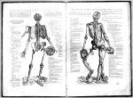

Andreas Vesalius, De humani corporis fabrica librorum epitome. Basileae, [ex officina Joannis Oporini, 1543.] -- (1402 C)
Andreas Vesalius (1514-1564) studeerde in Leuven rechten en filosofie, maar hij vertrok in 1533 naar Parijs om medicijnen te gaan studeren bij Jacobus Sylvius en Johannes Guinterius, beiden overtuigde aanhangers van Galenus (wiens anatomische werk recent ter beschikking was gekomen). Daar was Vesalius ‘prosector’ en deed zo zijn eerste anatomische ervaring op. Na een periode van ruim een jaar vertrok hij naar Padua, waar hij zo’n grote indruk maakte, dat hij op de dag na zijn promotie in de medicijnen benoemd werd tot hoogleraar in de anatomie. In 1544 werd hij benoemd tot lijfarts van de jichtige Karel V en later van Filips II, waarvoor hij naar Madrid verhuisde. Tijdens een pelgrimstocht naar Jeruzalem strandde hij op het Ionische eiland Zakynthos en kwam daarbij om.
Op negenentwintigjarige leeftijd, in 1543 -- hetzelfde jaar als waarin Copernicus’ boek verscheen --, had Vesalius zijn grote anatomische atlas gepubliceerd, die in vele opzichten revolutionair was. Steunend op eigen ervaring bij het seceren en prepareren van menselijke lichamen, had hij de moed op meer dan tweehonderd plaatsen een andere mening dan Galenus te hebben, wat hem bij de verstokte Galenisten de bijnaam ‘Vesanus’ (waanzinnige) opleverde. Maar aan de andere kant werd zijn atlas erkend als een meesterwerk, niet alleen door de tekst bij de platen, maar vooral door de platen zelf. Het waren grote houtsneden (tot 1940 waren de blokken ervoor nog in Duits bezit aanwijsbaar), die de ‘skelet- en spiermannen’ op voortreffelijke wijze deden uitkomen. Hun houding viel op door grote natuurlijkheid en ze werden daardoor tevens voor kunstenaars bij de weergave van het menselijke lichaam het grote voorbeeld. De titel van deze atlas is op vatten als een programma, want de platen tonen werkelijk de ‘fabrica humani corporis’ (het bouwsel of de structuur van het menselijk lichaam).
| vorige pagina | top pagina |